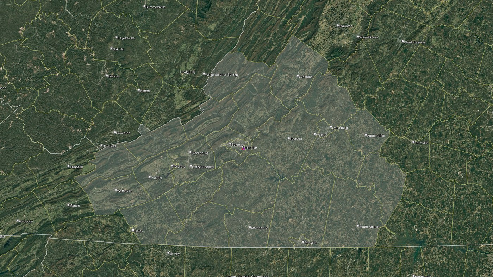

Soil Evaluations Across Virginia About Site & Soil Designs
Our services are provided by a licensed Authorized Onsite Soil Evaluator (AOSE) with years of experience evaluating soils and inspecting septic systems across Central and Southwest Virginia.
We work throughout the region — from the New River Valley and Roanoke east to Lynchburg and Bedford, south to Martinsville and Danville, and west into the Blue Ridge and Alleghany Highlands. If your property falls outside that area, call anyway. We're happy to talk it through and point you in the right direction.
Call or Email us today to schedule a consultation.